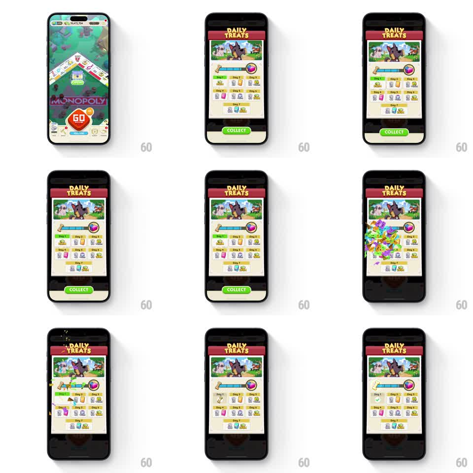

Media
Frame-by-frame

Rebuild this interaction 1:1: Monopoly Go's Daily Treats - a reward calendar panel with a pulsing Collect button; collecting fires confetti, stamps a green check on the day cell, and advances the progress track.

Rebuild this interaction 1:1: Monopoly Go's Daily Treats - a reward calendar panel with a pulsing Collect button; collecting fires confetti, stamps a green check on the day cell, and advances the progress track. ## Integration Integration: stack-agnostic spec - springs given as stiffness/damping, timed motions as duration + curve; map every value to your framework and animation library of choice. ## Scene Over the dimmed board, a cream panel with a red "DAILY TREATS" banner and dog artwork. Inside: a bone-to-bowl progress track across the top, a grid of day cells (Day 1 through Day 7) each showing its reward, and a full-width green "COLLECT" button at the bottom. ## Motion spec Pattern: collect burst with check stamp and progress advance. - Idle: the COLLECT button pulses gently (scale 1.0 to 1.05, 1.2s loop) to demand the tap. - Tap COLLECT: the button stops pulsing and depresses; confetti erupts from the panel's center (~40 pieces, greens/yellows/pinks, upward burst with gravity, ~1s). - A green circle-check stamps onto the collected day cell: scale 2.0 down to 1.0 with a springy thud (stiffness ~500, damping ~15), slight rotation settle. - The progress track's fill extends one notch (300ms, ease-out) with a small glow at the leading edge. - The next day cell highlights (thin bright border fade-in, 200ms) and COLLECT disables or re-labels. ## Calibration - Stamp the check as the confetti peaks - the two beats together read as one celebration. - The button pulse dies on tap; a still-pulsing button after collection invites a second tap. ## Reduced motion Check fades in; progress fill animates; no confetti. ## Don't miss - Only the current day is collectible; future days stay muted with their rewards visible. - Confetti renders over the panel but under the banner.